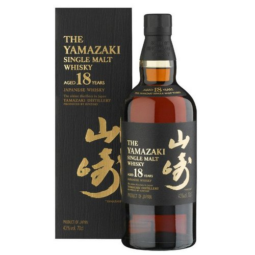

Single malt whisky is malt whisky from a single distillery, that is, whisky distilled from fermented mash made exclusively with malted grain (usually barley), as distinguished from unmalted grain.
Single malts are typically associated with single malt Scotch, though they are also produced in various other countries.
Under Scotch Whisky Regulations, a "Single Malt Scotch Whisky" must be made exclusively from malted barley (although the addition of E150A caramel colouring is allowed),
must be distilled using pot stills at a single distillery, and must be aged for at least three years in oak casks of a capacity not exceeding 700 litres (150 imperial gallons; 180 US gallons).
While the Scotch model is usually copied internationally, these constraints may not apply to whisky marketed as single malt that is produced elsewhere.
For example, there is no definition of the term single with relation to whisky in the law of the United States,
and some American whiskey advertised as single malt whisky is produced from malted rye rather than malted barley.
our top choices
| # | Country Origin | Production Year | Age | Name | Type |
|---|---|---|---|---|---|
| I | Ireland | 2000 | 16 | Bushmills | single malt |
| II | Scotland | 2002 | 12 | Bowmore | single malt |
| III | Japan | 2004 | 12 | Yamazaki | single malt |
| IV | Japan | 1998 | 18 | Yamazaki | single malt |


Spirit ratings organizations, such as the Beverage Testing Institute and the San Francisco World Spirits Competitions, have reacted favorably to Yamazaki's offerings. Most notably, the 18-Year has earned six consecutive double gold medals at the San Francisco Spirits Competitions between 2008 and 2013. Ratings aggregator Proof66.com places the Yamazaki 18-Year in the 97th percentile among its rated whiskies.

Spirit ratings organizations, such as the Beverage Testing Institute and the San Francisco World Spirits Competitions, have reacted favorably to Yamazaki's offerings. Most notably, the 18-Year has earned six consecutive double gold medals at the San Francisco Spirits Competitions between 2008 and 2013. Ratings aggregator Proof66.com places the Yamazaki 18-Year in the 97th percentile among its rated whiskies.

Spirit ratings organizations, such as the Beverage Testing Institute and the San Francisco World Spirits Competitions, have reacted favorably to Yamazaki's offerings. Most notably, the 18-Year has earned six consecutive double gold medals at the San Francisco Spirits Competitions between 2008 and 2013. Ratings aggregator Proof66.com places the Yamazaki 18-Year in the 97th percentile among its rated whiskies.